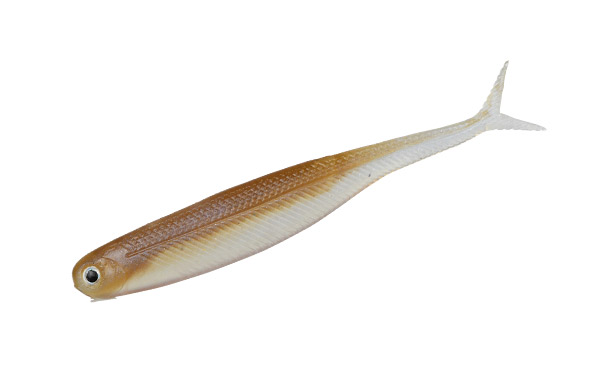
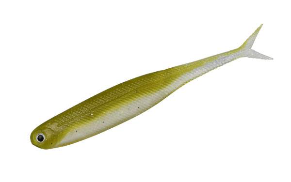
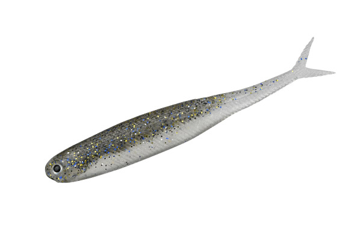
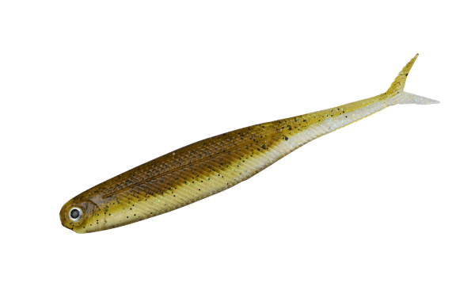

ヴィローラ4インチ
（VIROLA 4inch）
ヴィローラ4インチ（VIROLA 4inch）はDSTYLE（ディスタイル）のシャッドテールワームです。
「俺の求めたリアルは伊達じゃない」。主なターゲットはブラックバスです。
4インチにサイズアップして、飛距離と集魚力がアップしたVIROLA。小刻みに揺れてバスの本能を刺激するVテールと、セレクティブなバスにも見切らせないリアルさ、食わせのロールを生むボディバランスを持っています。

画像出典:DSTYLE公式HP
スペック
- メーカー
- DSTYLE（ディスタイル）
- タイプ
- シャッドテールワーム（中空ボディ・Vテール）
- 全長
- 4インチ
- 重量
- 約4.1g
- 推奨フック
- オフセットフック：ハヤブサ TNS #2/0
- 推奨ジグヘッド
- リューギ ヴェスパ #2／ハヤブサ FPJジグヘッド タイプラウンド #1〜#1/0
- その他
- Feco対応・Made in Taiwan
- 価格
- 1,166円（税込）
▼今すぐチェック

ヴィローラ4インチの特徴
Vテールとロールするボディ。フォールする姿はまさにベイトフィッシュ
-
小刻みに揺れるVテール
Vテールが小刻みに揺れて、バスの本能を刺激する。ロールしながらフォールする姿は、まさにベイトフィッシュ。
-
食わせのロールを生むボディバランス
ジグヘッドで中層をスイミングさせた時に、理想のロールアクションが出る。リアルアイで、リアル系ワームとしての完成度も高い。
-
中空ボディで水面系も簡単
中空にすることで、水面系のテクニックを誰でも簡単に出せる。水面下でもボディにエアを含むので、姿勢が安定して魚を誘いやすい。
ヴィローラ4インチの使い方
基本はジグヘッドでの中層スイミングです。ジグヘッドにセットして、一定のレンジを巻くか、ロッドを細かく揺すってロールさせながら中層を泳がせます。
オフセットフックでノーシンカーにすれば、水面付近でのI字系やピクピク系、ソフトジャークにも使えます。
ヴィローラ4インチの得意な状況
春先の定番の中層スイミング、ワカサギのいる湖でのデッドフィッシュパターンやI字系、ハイプレッシャーなバスに効くピクピク系など、あらゆるテクニックに対応します。
酸欠で浮いたワカサギをセレクティブに食べているバスには、ソフトジャークが効果的です。
ワンポイント
中空ボディなので、ノーシンカーでも水面付近に浮かせやすいのが特徴。1つのワームで、中層から水面まで使い分けられます。
オススメカラー
ヴィローラ4インチは全14色。そのうち4色を紹介します（画像は公式のカラーチャートより）。

ワカサギまず1つ選ぶならこの色。ワカサギのいる湖の定番。

アユアユのいる川やリザーバーに。

ギルブルーギルを食べている時に。

グリパンフィッシュグリパン系のナチュラルカラー。
画像出典:DSTYLE公式HP
ヴィローラ4インチに似ているルアー
-
 ギーラカンス4インチ
DSTYLE
詳細はこちら＞
ギーラカンス4インチ
DSTYLE
詳細はこちら＞
VIROLAテールを採用したDSTYLEのエラストマーワーム。
-
 ソウルシャッド
ジャッカル
詳細はこちら＞
ソウルシャッド
ジャッカル
詳細はこちら＞
小魚を偏食しているバスに効くシャッド。
-
 レアリス リグルシャッド2.5
デュオ
詳細はこちら＞
レアリス リグルシャッド2.5
デュオ
詳細はこちら＞
バス用のシャッドテールワーム。